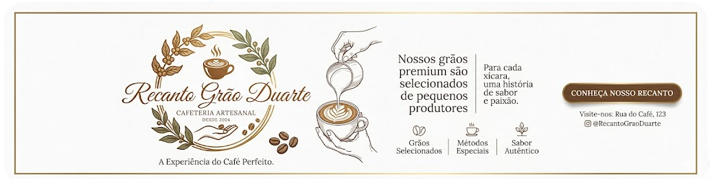
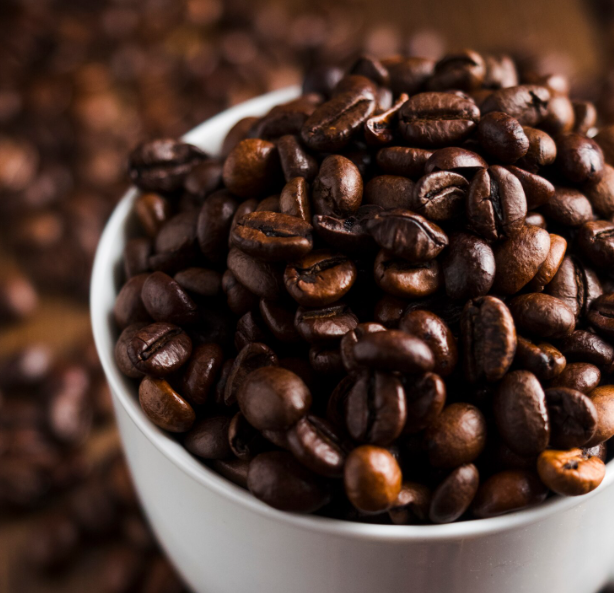

Nossa Galeria

Cafés Especiais

Preparo Artesanal

Equipamentos de Precisão
Cafeteria Artesanal desde 2010
Cultivamos, torramos e preparamos com dedicação — para que cada gole seja uma experiência única.



No Recanto Grão Duarte, nós mesmos cultivamos nossos grãos, acompanhando cada etapa com cuidado e dedicação. Desde o plantio até a colheita, tudo é feito com paixão, garantindo qualidade e origem em cada detalhe.
Depois, seguimos com a torra no ponto ideal e o preparo artesanal, para que cada xícara entregue um sabor único, fresco e cheio de personalidade.